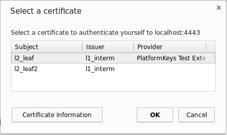

chrome.certificateProvider
| Description: |
Use this API to expose certificates to the platform which can use these
certificates for TLS authentications.
|
| Availability: |
Since Chrome 46.
|
| Permissions: |
"certificateProvider"
|
Important: This API works only on Chrome OS.
Usage
Typical usage of this API to expose client certificates to Chrome OS follows these steps:
- The Extension registers for the events onCertificatesUpdateRequested and onSignatureRequested.
- The Extension calls setCertificates to provide the initial list of certificates after the initialization.
- The Extension monitors the changes in the list of available certificates and calls setCertificates to notify the browser about every such change.
- During a TLS handshake, the browser receives a client certificate request. With an onCertificatesUpdateRequested event, the browser asks the Extension to report all certificates that it currently provides.
- The Extension reports back with the currently available certificates, using the setCertificates method.
- The browser matches all available certificates with the client certificate request from the remote host. The matches are presented to the user in a selection dialog.
- The user can select a certificate and thereby approve the authentication
or abort the authentication.

- If the user aborts the authentication or no certificate matched the request, the TLS client authentication is aborted.
- Otherwise, if the user approves the authentication with a certificate provided by this Extension, the browser requests the Extension to sign the data to continue the TLS handshake. The request is sent as a onSignatureRequested event.
- This event contains input data, declares which algorithm has to be used to generate the signature, and refers to one of the certificates that were reported by this Extension. The Extension must create a signature for the given data using the private key associated with the referenced certificate. Creating the signature might require prepending a DigestInfo and padding the result before the actual signing.
- The Extension sends back the signature to the browser using the reportSignature method. If the signature couldn't be calculated, the method has to be called without signature.
- If the signature was provided, the browser completes the TLS handshake.
The actual sequence of steps can be different. For example, the user will not be asked to select a certificate if the enterprise policy to automatically select a certificate is used (see AutoSelectCertificateForUrls and Chrome policies for users).
In the Extension, this can look similar to the following snippet:
function collectAvailableCertificates() {
// Return all certificates that this Extension can currently provide.
// For example:
return [{
certificateChain: [new Uint8Array(...)],
supportedAlgorithms: ['RSASSA_PKCS1_v1_5_SHA256']
}];
}
// The Extension calls this function every time the currently available list of
// certificates changes, and also once after the Extension's initialization.
function onAvailableCertificatesChanged() {
chrome.certificateProvider.setCertificates({
clientCertificates: collectAvailableCertificates()
});
}
function handleCertificatesUpdateRequest(request) {
// Report the currently available certificates as a response to the request
// event. This is important for supporting the case when the Extension is
// unable to detect the changes proactively.
chrome.certificateProvider.setCertificates({
certificatesRequestId: request.certificatesRequestId,
clientCertificates: collectAvailableCertificates()
});
}
// Returns a private key handle for the given DER-encoded certificate.
// |certificate| is an ArrayBuffer.
function getPrivateKeyHandle(certificate) {...}
// Digests and signs |input| with the given private key. |input| is an
// ArrayBuffer. |algorithm| is an Algorithm.
// Returns the signature as ArrayBuffer.
function signUnhashedData(privateKey, input, algorithm) {...}
function handleSignatureRequest(request) {
// Look up the handle to the private key of |request.certificate|.
const key = getPrivateKeyHandle(request.certificate);
if (!key) {
// Handle if the key isn't available.
console.error('Key for requested certificate no available.');
// Abort the request by reporting the error to the API.
chrome.certificateProvider.reportSignature({
signRequestId: request.signRequestId,
error: 'GENERAL_ERROR'
});
return;
}
const signature = signUnhashedData(key, request.input, request.algorithm);
chrome.certificateProvider.reportSignature({
signRequestId: request.signRequestId,
signature: signature
});
}
chrome.certificateProvider.onCertificatesUpdateRequested.addListener(
handleCertificatesUpdateRequest);
chrome.certificateProvider.onSignatureRequested.addListener(
handleSignatureRequest);
Summary
| Types | |
|---|---|
| Algorithm | |
| Error | |
| ClientCertificateInfo | |
| Hash | |
| PinRequestErrorType | |
| Methods | |
requestPin −
chrome.certificateProvider.requestPin(object details, function callback)
| |
stopPinRequest −
chrome.certificateProvider.stopPinRequest(object details, function callback)
| |
setCertificates −
chrome.certificateProvider.setCertificates(object details, function callback)
| |
reportSignature −
chrome.certificateProvider.reportSignature(object details, function callback)
| |
| Events | |
| onCertificatesUpdateRequested | |
| onSignatureRequested | |
| onCertificatesRequested | |
| onSignDigestRequested | |
Types
Algorithm
| Enum |
|---|
|
Error
| Enum |
|---|
|
ClientCertificateInfo
Since Chrome 86.
| properties | ||
|---|---|---|
| array of ArrayBuffer | certificateChain |
The array must contain the DER encoding of the X.509 client certificate as its first element. This must include exactly one certificate. |
| array of Algorithm | supportedAlgorithms |
All algorithms supported for this certificate. The extension will only be asked for signatures using one of these algorithms. |
PinRequestErrorType
| Enum |
|---|
"INVALID_PIN",
"INVALID_PUK",
"MAX_ATTEMPTS_EXCEEDED",
or "UNKNOWN_ERROR"
|
Methods
requestPin
chrome.certificateProvider.requestPin(object details, function callback)
Since Chrome 57.
Requests the PIN from the user. Only one ongoing request at a time is allowed. The requests issued while another flow is ongoing are rejected. It's the extension's responsibility to try again later if another flow is in progress.
| Parameters | ||||||||||||||
|---|---|---|---|---|---|---|---|---|---|---|---|---|---|---|
| object | details |
Contains the details about the requested dialog.
|
||||||||||||
| function | callback |
Is called when the dialog is resolved with the user input, or when the dialog request finishes unsuccessfully (e.g. the dialog was canceled by the user or was not allowed to be shown). The callback parameter should be a function that looks like this: function(object details) {...};
|
||||||||||||
stopPinRequest
chrome.certificateProvider.stopPinRequest(object details, function callback)
Since Chrome 57.
Stops the pin request started by the requestPin function.
| Parameters | ||||||||
|---|---|---|---|---|---|---|---|---|
| object | details |
Contains the details about the reason for stopping the request flow.
|
||||||
| function | callback |
To be used by Chrome to send to the extension the status from their request to close PIN dialog for user. The callback parameter should be a function that looks like this: function() {...};
|
||||||
setCertificates
chrome.certificateProvider.setCertificates(object details, function callback)
Since Chrome 86.
Sets a list of certificates to use in the browser.
The extension should call this function after initialization and on every change in the set of currently available certificates. The extension should also call this function in response to onCertificatesUpdateRequested every time this event is received.
| Parameters | |||||||||||
|---|---|---|---|---|---|---|---|---|---|---|---|
| object | details |
The certificates to set. Invalid certificates will be ignored.
|
|||||||||
| function | (optional) callback |
Called upon completion. If you specify the callback parameter, it should be a function that looks like this: function() {...};
|
|||||||||
reportSignature
chrome.certificateProvider.reportSignature(object details, function callback)
Since Chrome 86.
Should be called as a response to onSignatureRequested.
The extension must eventually call this function for every onSignatureRequested event; the API implementation will stop waiting for this call after some time and respond with a timeout error when this function is called.
| Parameters | |||||||||||
|---|---|---|---|---|---|---|---|---|---|---|---|
| object | details |
|
|||||||||
| function | (optional) callback |
If you specify the callback parameter, it should be a function that looks like this: function() {...};
|
|||||||||
Events
onCertificatesUpdateRequested
Since Chrome 86.
This event fires if the certificates set via setCertificates are insufficient or the browser requests updated information. The extension must call setCertificates with the updated list of certificates and the received certificatesRequestId.
addListener
chrome.certificateProvider.onCertificatesUpdateRequested.addListener(function callback)
| Parameters | ||||||||
|---|---|---|---|---|---|---|---|---|
| function | callback |
The callback parameter should be a function that looks like this: function(object request) {...};
|
||||||
onSignatureRequested
Since Chrome 86.
This event fires every time the browser needs to sign a message using a certificate provided by this extension via setCertificates.
The extension must sign the input data from request using the appropriate algorithm and private key and return it by calling reportSignature with the received signRequestId.
addListener
chrome.certificateProvider.onSignatureRequested.addListener(function callback)
| Parameters | |||||||||||||||||
|---|---|---|---|---|---|---|---|---|---|---|---|---|---|---|---|---|---|
| function | callback |
The callback parameter should be a function that looks like this: function(object request) {...};
|
|||||||||||||||
onCertificatesRequested
Deprecated since Chrome 86. Use onCertificatesUpdateRequested instead.
This event fires every time the browser requests the current list of certificates provided by this extension. The extension must call reportCallback exactly once with the current list of certificates.
addListener
chrome.certificateProvider.onCertificatesRequested.addListener(function callback)
| Parameters | ||||||||||||||
|---|---|---|---|---|---|---|---|---|---|---|---|---|---|---|
| function | callback |
The callback parameter should be a function that looks like this: function(function reportCallback) {...};
|
||||||||||||
onSignDigestRequested
Deprecated since Chrome 86. Use onSignatureRequested instead.
This event fires every time the browser needs to sign a message using a certificate provided by this extension in reply to an onCertificatesRequested event. The extension must sign the data in request using the appropriate algorithm and private key and return it by calling reportCallback. reportCallback must be called exactly once.
addListener
chrome.certificateProvider.onSignDigestRequested.addListener(function callback)
| Parameters | |||||||||||||||||||||||
|---|---|---|---|---|---|---|---|---|---|---|---|---|---|---|---|---|---|---|---|---|---|---|---|
| function | callback |
The callback parameter should be a function that looks like this: function(object request, function reportCallback) {...};
|
|||||||||||||||||||||